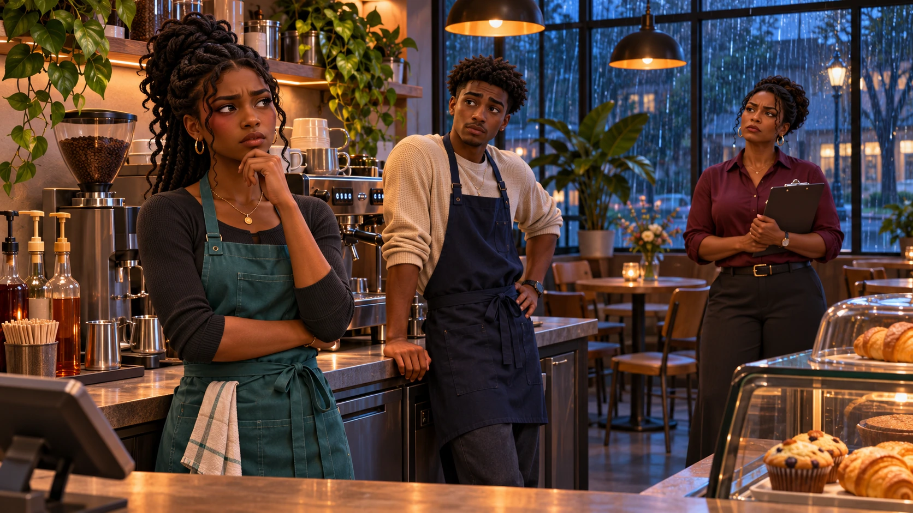

SPEAK
UP
TRANSITION TOWN LIBRARY
← Story library
INTERACTIVE STORY
Book view: on
My choices

EPISODE 01
The Shift
A promise. A changed schedule.
A conversation that cannot wait.
Your decisions
Close
Print reflection